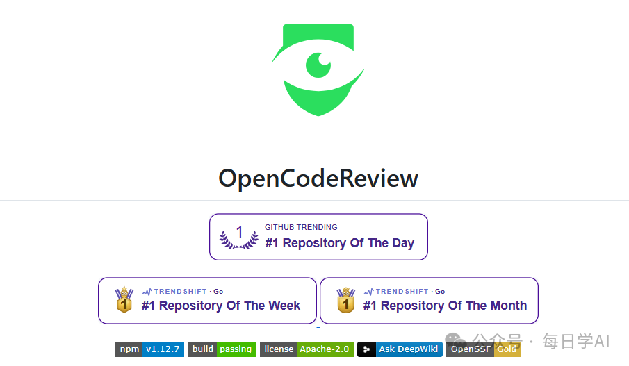

阿里开源的代码评审项目：为什么能让 LLM 少干活，而准确率反涨 4.7 倍？
来源：微信公众号 归档日期：2026-09-19 抓取状态：成功 原文字符：6777｜配图：1 张
摘要速览
- 📮 摘要 阿里开源的 AI 代码评审工具 Open Code Review，用工程逻辑接管了"审哪些文件、按什么规则、评论贴在第几行"，只把缺陷判断留给大模型。同一个 Claude 模型下，准确率从通用 Agent 的 7.23% 提到 33.90%，Token 只花约九分之一。本文拆解它怎么做到的，以及那个被写在明面上的代价。
核心内容
（待补充）
可执行启发
（待补充）
我的想法
（待补充）
原文沉淀
来源：https://mp.weixin.qq.com/s/9k__ghMXA4xAP94aHFh-Gg 平台：weixin｜作者：每日学AI 抓取方式：cdp｜字符数：6845｜图片：1
📮 摘要 阿里开源的 AI 代码评审工具 Open Code Review，用工程逻辑接管了"审哪些文件、按什么规则、评论贴在第几行"，只把缺陷判断留给大模型。同一个 Claude 模型下，准确率从通用 Agent 的 7.23% 提到 33.90%，Token 只花约九分之一。本文拆解它怎么做到的，以及那个被写在明面上的代价。
有个剧本在很多团队里反复上演。
一支团队在 CI 流水线里接了个 AI 代码评审机器人。第一天，它在一个 PR 下面留了 40 条评论，大家觉得捡到宝了。第三天，有人逐条核对，发现其中 37 条是误报。第二周，没有人再点开那个机器人的评论。
这不是段子。阿里在开源 Open Code Review 时给出的官方评测里，通用 Agent 方案 Claude Code 在同等条件下的准确率是 7.23%——它总共报出 5980 条问题，其中只有 435 条是真的。折算下来，你平均要读 14 条 AI 评审意见，才会撞上 1 条真正值得改的。
误报这件事的杀伤力不在数字上，在人心上。一个评审工具一旦被贴上"它老乱说"的标签，它就再也不会被认真对待了，哪怕它后来真的抓到了一个线上事故级的 Bug。
阿里给出的解药，思路有点反直觉：不是让模型干更多活，而是让它干更少活。
它到底是什么
Open Code Review（命令行里叫 ocr）是一个 AI 代码评审的命令行工具，Go 写的，Apache-2.0 协议，版权归 2026 Alibaba。
它的来历值得单独说一句：这不是一个为了开源而做的新项目，而是阿里集团内部用了两年多的官方 AI 代码评审助手，在内部服务了数万名开发者之后，才把 Go 重写版对外开源。截至 2026 年 9 月 19 日，这个仓库在 GitHub 上有 37.1k star、2.6k fork，npm 上的最新版本号是 1.12.3。

它的工作方式可以这么理解：
你可以把它想成一条代码评审的流水线，大模型只是这条流水线上的一道工位。 传统做法是：把一堆改动丢给一个通用 Agent，让它自己决定看哪些文件、看多深、问题在第几行。Open Code Review 的做法是：哪些文件必须审、按什么规则审、结论贴在第几行，这些由程序提前定死；模型只负责最后那一下——"这段代码到底有没有问题"。
技术上说，它读取 Git diff，把变更文件交给一个可以调用工具的 Agent，Agent 背后接的是你自己配置的大模型（兼容 OpenAI 和 Anthropic 接口，也支持自定义端点），最后输出行级精确的结构化评审意见。除了审 diff，ocr scan 还能直接扫整个文件——这在你要审计一个刚接手的陌生代码库时很有用，那种场景往往压根没有有意义的 diff 可以对比。
通用 Agent 审代码，为什么总差口气
如果你真的用 Claude Code 之类的通用 Agent 配个 Skill 做过代码评审，下面这三个问题大概都撞过：
覆盖不全。改动小的时候一切正常，改动一大，Agent 就开始"偷懒"——挑几个文件看看，剩下的跳过。它不会告诉你它跳过了，它只会安静地少报几个问题。
位置漂移。它说第 42 行有问题，你翻过去发现是第 57 行，或者压根在另一个文件。行号这个东西，大模型是真的不擅长数。
质量不稳。你把提示词里的一个形容词改了，评审结果能差出一截。自然语言驱动的 Skill 很难调试，因为你没有一个稳定的"输入-输出"对应关系可以对齐。
阿里在 README 里对这三件事的定性是：纯语言驱动的架构，对评审流程缺乏硬约束。
这句话是整篇文章的钥匙。它说的不是"模型不够强"，而是"这件事的结构不对"。流程性的、确定性的、不允许出错的环节，你不应该指望一个概率模型每次都做对。
核心做法：把不该大模型管的活收回来
Open Code Review 把评审拆成了两半，各干各擅长的事。
第一层：哪些文件要审，程序说了算
这一层完全不经过模型，由工程逻辑保证。有四件事：
精准的文件筛选。程序决定哪些文件要审、哪些该过滤掉，不靠模型的"自觉"。这是解决"覆盖不全"的直接手段。
智能的文件打包。关联文件会被归到同一个评审单元里。官方给的例子很形象：message_en.properties 和 message_zh.properties 会被打包在一起审——因为改了英文文案忘了改中文，这类问题只有把它们放在同一个上下文里才看得出来。
每个包作为一个独立的子 Agent 跑，上下文互相隔离。这招有两个好处：一是超大改动时不容易乱，二是天然支持并发。
精细化的规则匹配。按文件特征把规则挂上去，Java 文件走 Java 规则，MyBatis 的 XML mapper 走 SQL 注入规则。用模板引擎做匹配，而不是把规则写进提示词让模型自己挑。阿里给的理由是：模板匹配的行为更稳定，结果更可预期。
独立的定位与反思模块。专门负责"这条评论该贴在第几行"和"这条评论说得对不对"，放在主流程外面。
第二层：模型只负责"这段代码有没有问题"
模型被留在了它真正不可替代的地方：动态判断和动态取上下文。
每个评审子任务是一个独立的 Agent 循环，最多 20 轮工具调用。模型可以自己决定这一轮要干嘛——读完整文件、全仓库搜索、看其他变更文件的 diff、按名字找文件。
举个例子。模型看到一处方法调用怀疑会返回 null，它可以主动去搜这个方法的实现、看历史上别人是怎么调的，再回来下结论。这种"层层追问"的能力，是规则引擎永远做不到的。
还有一个细节我挺喜欢：它那套工具集不是从通用 Agent 工具箱里抄来的，而是从阿里线上大规模评审数据里的工具调用轨迹蒸馏出来的——分析每个工具被调用的频率、单个工具被重复调用的比例、加一个新工具会怎么影响整条调用链，然后做取舍。最终留下的，是一套专门为代码评审长出来的工具。
这是"场景化"该有的样子。通用工具箱什么都能干，但在一个具体场景里，少即是稳。
第三层：给 AI 的反馈"再审一遍"
误报从哪来？阿里的总结是三类：知识遗忘（不知道 StringUtils.isBlank 是 null 安全的）、上下文不足（把合理的设计决策当成缺陷）、以及没有按用户指定的方向审。
对应的打法里，最狠的一招叫反思模型。在集团内部的实践中，团队用用户的真实反馈数据（采纳／误报／忽略）训练了一个专项的 Qwen3-30B-A3B 小模型，专门干一件事：在主模型输出评论之后，再判一遍这条评论是不是误报。
效果（官方口径）：误报拦截率从基座模型的 30.09% 提升到 52.63%，单次判断耗时从主模型的约 5 秒降到 500 毫秒以内。
用大模型写、用小模型审，这个组合在工程上很划算。判断"这条评论靠不靠谱"比"这段代码有没有问题"简单得多，没必要用同一个尺寸的模型。
还有个设计解决了"什么算问题由谁说了算"。阿里观察到规则存在明显的边际效益递减——规则写得越多，模型的指令跟随反而越差。而且不同业务的 DNA 不一样：支付系统眼里的红线，放在内容管理系统里可能纯属噪音。
于是它做了四层规则穿透，每层都是"命中即生效、没命中就降级到下一层"：
| 层级 | 位置 | 用途 |
|---|---|---|
| 第一层 | --rule | 一次性覆盖，如上线前安全专项检查 |
| 第二层 | .opencodereview/rule.json | 团队共享，随代码仓库版本控制 |
| 第三层 | ~/.opencodereview/rule.json | 个人偏好，跨项目生效 |
| 第四层 | 系统默认 | 内置 13 套语言／文件类型专属规则 |
内置的默认规则聚焦每种语言最高频的缺陷模式：Java 看 NPE、线程安全、循环里的 N+1 查询；TypeScript/React 看 Hooks 用法、XSS（禁 innerHTML / eval）、严格 ===；C 看 malloc/free 配对、缓冲区溢出、悬空指针；MyBatis XML 看 ${} 和 #{} 混用导致的 SQL 注入。
实测数据：7% 对 34%，代价写在明面上
阿里做了一套叫 AACR-Bench 的评测集：从 50 个热门开源仓库里挑了 200 个真实 Pull Request，覆盖 10 种编程语言，由 80 多位资深工程师交叉标注出 1505 个真实缺陷。数据集已经公开在 HuggingFace 上。
先花半分钟说清三个指标，不然后面的数字没意义：
•准确率（Precision）：AI 报出来的问题里，有多少是真的。低了就是"狼来了"。
•召回率（Recall）：代码里真实存在的问题，AI 捞出来多少。低了就是漏网之鱼多。
•F1：前两个的调和平均，衡量综合质量。
打个比方：准确率像是验钞机的可信度，它每报警一次有多少次是真假币；召回率像是渔网的密度，池子里一百条鱼能捞上来几条。验钞机天天乱响，收银员很快就当它不存在了。
同一款模型（Claude-4.6-Opus）下的对比是这样的：
| 组合 | 报出 | 命中 | 准确率 | 召回率 | F1 | Token | 耗时 |
|---|---|---|---|---|---|---|---|
| OCR v1.3.1 | 889 条 | 301 个 | 33.90% | 20.00% | 25.10% | 352K–743K | 1–6 分钟 |
| Claude Code v2.1.169 | 5980 条 | 435 个 | 7.23% | 28.90% | 最优 14.13% | 2,062K–5,664K | 5–14 分钟 |
| Codex v0.140.0 | — | — | 27.82% | 4.92% | — | 525K | 约 3 分钟 |
（Codex 那一行的具体模型组合，官方文章里没有标明）
几个值得单独拎出来说的点：
准确率差了 4.7 倍。33.90% 对 7.23%。Open Code Review 在各模型上的准确率区间是 25%–38%，Claude Code 是 7%–16%。
Token 只花约九分之一。这是 README 里明写的。对跑在 CI 上、每个 PR 都要过一遍的场景，这个差距是成本级别的。
但召回率是输的。20.00% 对 28.90%。Claude Code 多捞出了 134 个真实问题（435 对 301），增幅约 45%。
阿里没有藏这个数字，反而在 README 里写明了这是刻意的设计取舍：宁可少报，也不要用噪音淹没工程师。这个选择对 CI 场景是合理的——每条误报都要消耗一个人的注意力，而注意力是团队里最贵的东西。
内部数据（前提是评审意见被合并进目标分支）官方也一并放了：月活用户 2 万，累计执行评审任务 370 万次，用户采纳率超过 30%，全集团范围内有效 AI 评论占比接近 80%，评论位置准确率超过 97%。官网首页还显示，近 30 天 npm 下载量为 231K+。
最后补一个我觉得最有说服力的案例：这个项目本身是用 Claude Code 从零写出来的。阿里团队全程用 Claude Code 把内部那套 Java 系统用 Go 重写，同时把 Open Code Review 接进自己的开发流程，每一次变更都让它自己审一遍。结果是在 106 次代码变更中，累计发现 145 个有效问题。
最强 Coding Agent 写出来的代码，依然需要专业的评审 Agent 兜底。写和审，是两种能力。
怎么用起来：一条命令到 CI
最省事的路径就三步。
装（需要 Git 2.41 或更高版本，OCR 依赖 Git 生成 diff 和检索代码）：
BASH
npm install -g @alibaba-group/open-code-review
配模型，交互式界面会引导你选服务商、填 API Key、选模型，最后自动测一次连通性：
BASH
ocr config provider ocr config model
跑评审：
BASH
cd your-project ocr review # 审当前工作区的所有改动 ocr review --from main --to feature-branch # 审一个分支区间的改动 ocr scan --path src/internal # 全文件扫描，不依赖 diff
如果你本来就订阅了 Claude Code、Codex 或 Cursor，可以直接用委托模式：ocr delegate 由宿主 Agent 用自己的模型来做评审，OCR 只负责文件筛选和规则解析。这样你不用再配一份 API Key，也不用付第二份钱。
剩下的都是可选的：CI/CD 有现成的 GitHub Actions、GitLab CI、Gerrit 集成；编码 Agent 有 Claude Code / Codex / Cursor / OpenCode 插件；另外还支持 MCP Server 扩展、浏览器端的会话查看器、以及 OpenTelemetry 埋点。
不能只看好的那一面
有几件事必须说清楚。
第一，召回率是真低。20% 意味着代码库里大约每五个真实问题，它能找出一个。放在支付链路、权限系统这类场景，它绝对不能是合并前的唯一一道关卡。它的正确用法是第二道检查，不是守门员。
第二，便宜不等于免费。它不绑定模型厂商是优点，但也意味着你要自己出 API Key。省下的是九分之八的 Token，不是全部。另外它硬性依赖 Git 2.41+，老环境得先升级。
第三，规则体系是有学习成本的。内置规则是照着阿里自己的生产关注点调的，直接用在你的业务上大概率需要定制。而规则"写得越多、指令跟随越差"这个边际递减现象，是阿里自己提出的——所以规则这事，少而准胜过多而全。
真正值得抄走的，是那句潜台词
回到开头那个"没人再点开评论"的机器人。
它失败的原因不是模型太笨，而是设计者把整件事都托付给了模型——包括那些根本不需要智能、只需要确定性的部分。
Open Code Review 值这么多 star 的地方，不是它比谁更会找 Bug，而是它证明了一件事：AI 功能的可靠性，可以来自模型外面的工程，而不只是来自模型本身。
这个结论的适用范围比代码评审大得多。任何你在做的 Agent——数据分析、报告生成、客服、运维——都可以问一遍同样的问题：
•这件事里，哪些步骤是必须每次都对的？（交给代码）
•哪些步骤只有模型能判断？（留给模型）
•模型的输出，有没有一个独立的环节去校验它？（定位、反思、规则约束）
•我能不能把上下文收窄，让模型的注意力只落在真正相关的东西上？
能算的别让模型猜，能锁死的别让模型自由发挥。模型很贵，注意力更贵——不管是模型的，还是人的。
项目地址
•GitHub：github.com/alibaba/open-code-review
•官网文档：open-codereview.ai
ℹ️ 提示 文中数据截至 2026-09-19。项目迭代较快，请以仓库最新状态为准。
END
— 谢 · 谢 · 观 · 看 —
如果本文对你有帮助，点个赞 + 在看，是对我最大的鼓励 ❤️
关注我，每日学AI，每天进步一点点
这里有 AI 前沿 · 开源一线 · 实战教程
归属：[[02-输入/按主题/工具与技术/_index|工具与技术]]